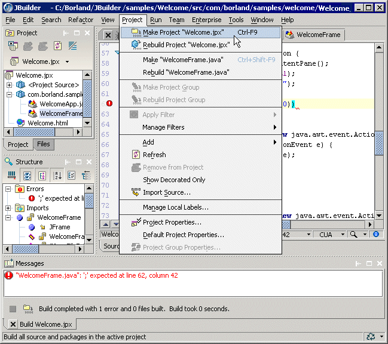

Building your project is as simple as choosing Project|Make Project. The JBuilder build system, based on Ant, builds all buildable nodes. You can also right-click a buildable node or nodes in the project pane and choose Make to only build selected nodes. During the make phase, various processes may occur depending upon what node is selected — preparing non-Java files for compiling, compiling of Java source files, generation of archive files, and so on. Messages from the build system are displayed in the message pane.

To run your project, choose Run|Run Project or right-click a file in the project pane and choose Run.
To set the main class and VM parameters for your project, go to the Run page of the Project Properties dialog box (Project|Project Properties).
For more information, see:
Building Applications with JBuilder: Compiling Java programs
Building Applications with JBuilder: Building Java programs
Building Applications with JBuilder: Running Java programs